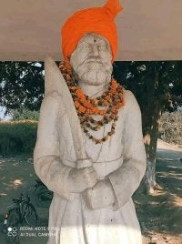

Welcome to Sanjeev's Ancesterol History
This is a website with Kshatriya/Rajput lineage's content.
Meghar Singh Sakarwar (c. 1820–1860) was a prominent zamindar from Gahmar village in the Ghazipur district of present-day Uttar Pradesh, India. Belonging to the Sakarwar clan of Rajputs, he played a significant role in the Indian Rebellion of 1857 against British rule. Role in the 1857 Rebellion: On June 6, 1858, Babu Amar Singh, leading a force of 2,000 sepoys and 500 sowars, arrived in Gahmar. The Sakarwar Rajput rebels, under Meghar Singh's leadership, sought an alliance with Amar Singh to strengthen their resistance against the British. Demonstrating commitment to the cause, Meghar Singh presented Amar Singh with a nazrana (gift) worth Rs 20,000. This alliance was bolstered by longstanding marital ties between the Sakarwar and Ujjainiya Rajputs. Throughout the summer of 1858, the combined rebel forces expanded by recruiting deserters from the British army, effectively engaging British troops across six parganas of Ghazipur and neighboring regions along the Ganges and Karamnasa rivers.
I belong to Sakarwar Clan of Kshatriya/Rajputs
Below is the Depiction of My Ancestoral Descendants History

Enjoy my History!